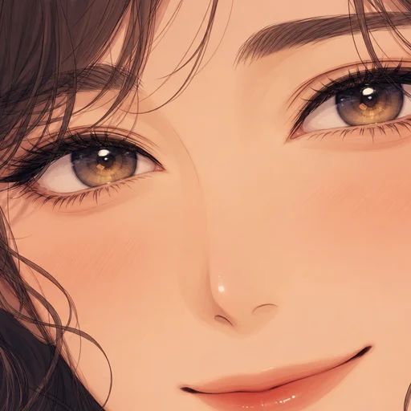
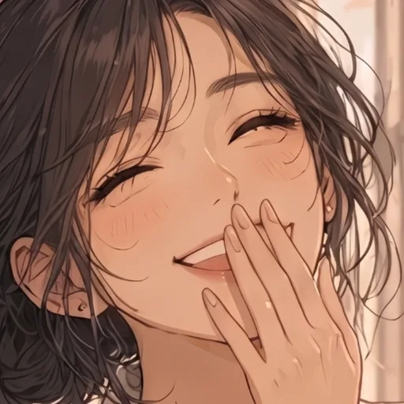
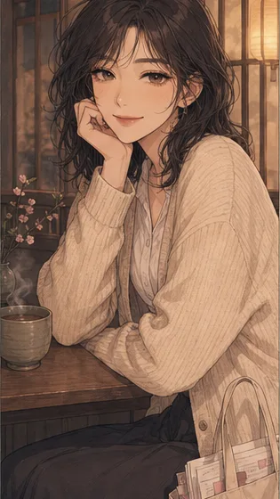
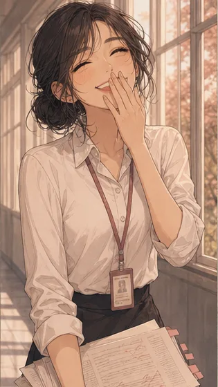
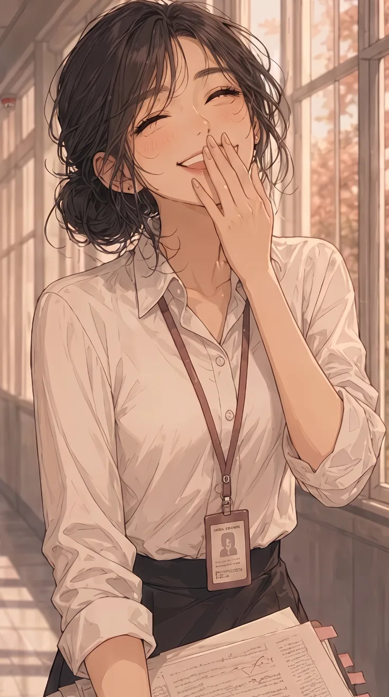

하서연 이미지 교체 — 프사(정사각) · 기본 인트로 · 조이 (전/후)
운영자 260812: "프로필 사진을 정사각 비율의 이미지로 바꾸고 / 기본 인트로 이미지, 조이 이미지를 내가 준거로 변경해줘". 업로드분 2장(viewer/characters/season/haeun/main/ 루트 착지)을 정본 3자리에 재단해 넣었다 — 정사각 얼빡 1장 → 프사, 세로 전신 1장 → 기본 인트로(base) + 조이(joy). 새로 생성하지 않고 운영자가 준 원본만 잘랐다(과금 0).
① 프사(roster.avatar) — 정사각 재단 · 얼굴 중심 = 프레임 중심
전512² · 눈·코·입만 남은 초근접 — 표정을 못 읽는다

얼굴이 프레임보다 커서 이마·턱·머리가 전부 잘렸다. 34px 헤더 아바타로 줄면 살구색 면만 남는다.
후512² · 운영자 업로드 얼빡(1391×1435)에서 1150² 재단

십자선 교차점이 콧대에 얹힌다 — 원본 얼굴 중심(눈 중점과 입 사이 ≈ 765,735)을 크롭 중심으로 잡았기 때문. 원본이 1391×1435(비정사각)라 정확한 1:1이 되게 잘랐다.
② 실사용 크기 — 앱이 실제로 그리는 지름
전
후
작은 지름에서 갈린다 — 전은 32~34px에서 피부 면이지만, 후는 감은 눈·웃는 입·손이 남아 누구인지·어떤 결인지가 읽힌다(실측 셀렉터 = .ymsg .yava 32 · .yh-ava 34 · .ypick-row .yava 58 · .ycd-card .yintro-ava 104).
③ 기본 인트로(main/base/haeun_base.webp = roster.bg) — 무대 420×900 cover
전315×560 · 찻집 창가 턱괸 컷

무대(420×900)보다 작은 원본이라 확대되어 깔린다 — 실기기 2~3배 DPR에선 뭉갠 면이 그대로 보인다.
후736×1316 · 운영자 업로드 전신(1028×1839) 원프레임

가로 315 → 736(2.3배). 무대 폭보다 커져 축소 렌더가 되고, 원본 프레임을 안 자르고 통째로 넣었다(무대 cover가 좌우를 알아서 먹는다).
④ 조이(main/joy/haeun_joy.webp) — 같은 장면의 고해상 원본
전315×560 · 시트 F 칸에서 자른 저해상

종전 조이는 운영자가 새로 준 것과 같은 장면을 캐릭터보드 시트에서 작게 자른 것이었다(≈0.03MP).
후736×1316 · 같은 장면의 원본 해상

장면·구도는 그대로고 해상만 올랐다(0.03MP → 0.97MP ≈ 5.5배 픽셀). 명찰 글자·서류 선·잔머리가 살아난다.
⑤ 규격·배선 — 무엇이 어디로 갔나
| 자리 | 정본 경로(불변) | 전 | 후 | 원본 |
|---|---|---|---|---|
| 프사 | viewer/assets/yeta_char/av/haeun.webp | 512×512 · 30KB | 512×512 · 25KB | 05 55 13.jpg (1391×1435) |
| 기본 인트로 | …/haeun/main/base/haeun_base.webp | 315×560 · 32KB | 736×1316 · 90KB | 05 54 46.jpg (1028×1839) |
| 조이 | …/haeun/main/joy/haeun_joy.webp | 315×560 · 30KB | 736×1316 · 90KB | 05 54 46.jpg (1028×1839) |
경로는 한 글자도 안 바뀌었다 — roster.json의 avatar·bg도, media.json도 무접촉(파일 바이트만 교체 · 한나 얼빡 260805 선례 계승). 규격 선택 근거도 기틀 실측 = 프사 512²는 av/*.webp 12장 전원 값 · 736폭은 characters/ 최다 규격(736×1308 계열 57장). 인코딩 quality 82 = shared/cut_board_sheet.py 배포본 값 계승.
⑥ 원본 보관 · 게이트
| 축 | 결과 |
|---|---|
| 업로드 원본 2장 | viewer/…/haeun/main/ → _소재/haeun_src_*.jpg (git mv · 삭제 아님 = D2 운영자 승인 사항) |
| 왜 옮겼나 | 모드 루트 미분류 파일은 빌더가 base 버킷으로 흡수한다 — 1391×1435 얼빡이 그대로 채팅 배경에 깔렸을 자리(운영자 260726 「얼빡은 배경에 깔지마」) |
| build_season_media.py | OK haeun: media.json 최신 (base 1 · joy 2 · blue 1 · tense 2 · mad 1) — 재생성 diff 0 |
| check_refs 얼빡 배경 게이트 | ✅ 배경 풀 347장 프사 0 · 정사각 미확인 0 |
| check_refs 로스터 에셋 게이트 | ✅ bg·avatar·mode 경로 37건 전원 실존 |
| check_refs 전체 | ✅ 통과(디자인 토큰·토큰 락 포함 · 차단 0) |
운영자가 준 2장으로 3자리를 채웠으므로 기본 인트로와 조이가 같은 그림이 된다(세로 전신 1장을 두 버킷에 넣음). 조이 전용 그림을 따로 두고 싶으면 main/base/에 다른 컷을 부어 python3 shared/build_season_media.py만 돌리면 된다.